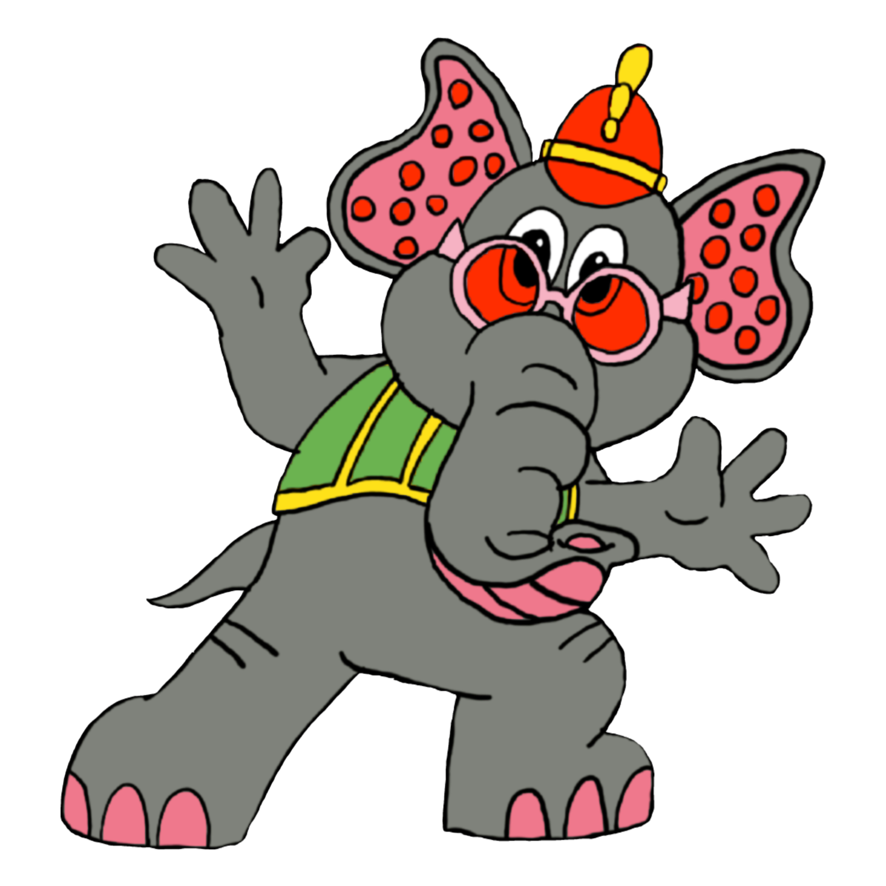

    <mat-toolbar color="primary">
      <div>
        <a routerLink="blog">
           
          <span class="label blog-tittle blog-timeline">Snorky's</span>
        </a>
      </div>

      <div>
        <ul class="navigation-items">
          <li>
            <a routerLink="blog" routerLinkActive="active">
              <mat-icon class="icon">home</mat-icon>
              <span class="label blog-tittle">Home</span>
            </a>
          </li>
          <li>
            <a routerLink="dashboard" routerLinkActive="active">
              <mat-icon class="icon">dashboard</mat-icon>
              <span class="label blog-tittle">Dash</span>
            </a>
          </li>
          <li>
            <a routerLink="login" routerLinkActive="active" *ngIf="!toggle">
              <mat-icon class="icon">input</mat-icon>
              <span class="label blog-tittle">LogIn</span>
            </a>
            <a routerLink="login" routerLinkActive="active" *ngIf="toggle" (click)="logOut()">
              <mat-icon class="icon">output</mat-icon>
              <span class="label blog-tittle">LogOut</span>
            </a>
          </li>
 
        </ul>
      </div>
    </mat-toolbar>